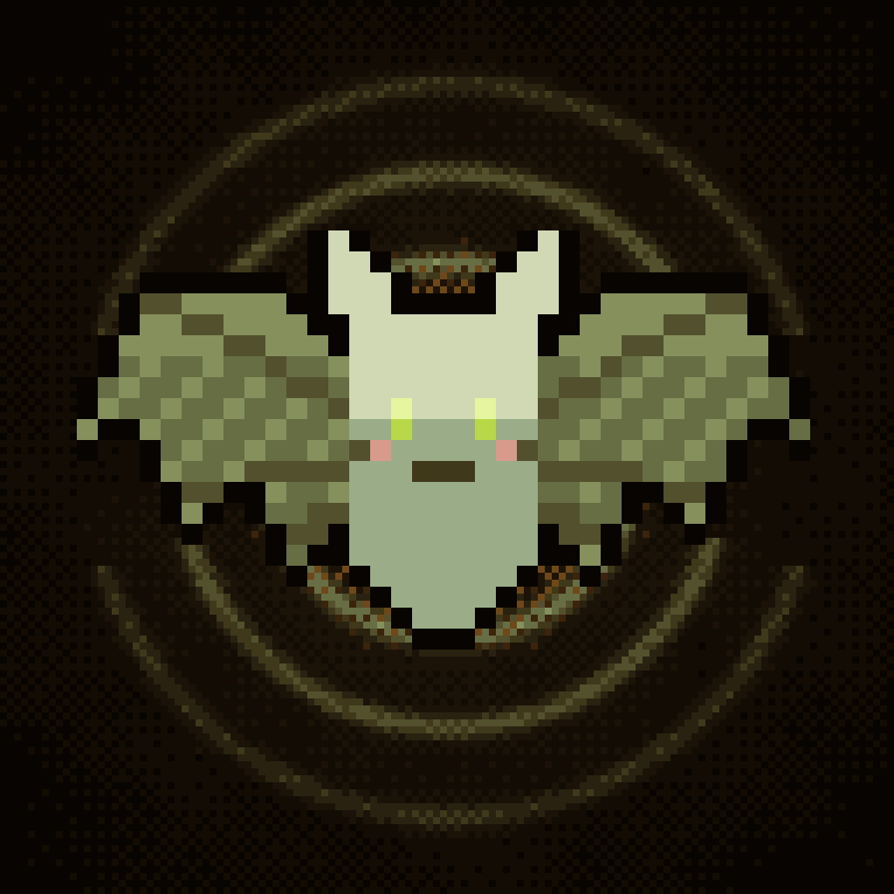

ECHOLOT
SIEH MIT DEN OHREN
Fledermaus Fipp sieht in der dunklen Höhle nur, was ihr Echo zeigt. Ruf, lausche, weich der Eule aus, löse Echo-Rätsel und tritt in Echo-Duellen gegen Bosse an. Nach fünf Welten wartet der Endlos-Modus mit wöchentlicher Weltrangliste.